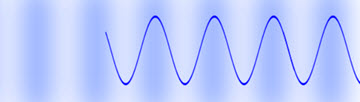
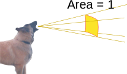
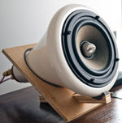
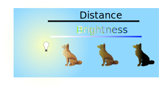
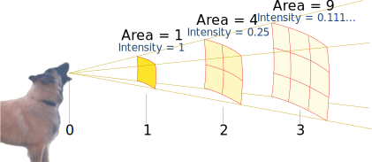
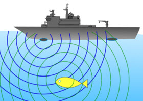
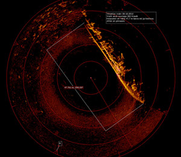
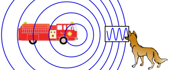
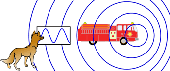

Sound

Arrow the Dog barks!
His bark makes the air go between compressed and rarefied:

The air molecules bounce back and forth a bit but don't really travel anywhere.
We call that type of wave longitudinal, like this:

But people show sound as "up-down" waves
because it is easier to show that way.
Audio Spectrum

A low frequency of vibration has a low pitch and makes a deep sound, like a growl.
A high frequency has a high pitch, like a whistle.
Sound frequency is often measured in "Hertz" (Hz) which is how many vibrations per second.
Example: 50 Hertz means 50 times per second
Humans can hear sounds between about 20 Hz and 20,000 Hz (depending on the human!).
You can try it yourself:
Below 20 Hz is called infrasound ("infra" means below), and above 20,000 Hz is ultrasound ("ultra" means beyond).
We are most sensitive to sounds between 1,000 and 4,000 Hz:

A Typical Hearing Sensitivity Curve
(dB explained below)
As we get older we are less sensitive to higher frequency sounds (a limit around 12,000 Hz is normal for an adult).
Sound Intensity

Sound Intensity is the amount of power per unit area
Usually measured as Watts per square meter (W/m2)
(Note: 1 W/m2 is very loud, like a chain saw up close.)
Loudness and Decibels
Loudness is how powerful a sound seems to us.
For a sound to seem twice as loud needs about ten times the intensity.

Example: you feed 1 Watt of power into a speaker.
Your friend says "twice as loud please!"
You need to use about 10 watts to make them agree it now sounds twice as loud.
So we use decibels (dB) to measure loudness:
- +10 dB means 10× the intensity
- +20 dB means 100× the intensity
- +30 dB means 1000× the intensity
- etc
The scale for sound starts at 0 dB, the quietest sound humans can hear, and goes up from there:
| decibels (dB) |
Intensity (W/m2) |
|||
|---|---|---|---|---|
| 0 | Quietest sound humans can hear | 10-12 | ||
| 10 | Pin drop | 10-11 | ||
| 20 | Rustling leaves | 10-10 | ||
| 30 | Whisper | 10-9 | ||
| 40 | Library | 10-8 | ||
| 50 | Quiet conversation | 10-7 | ||
| 60 | Restaurant | 10-6 | ||
| 70 | Normal TV | 10-5 | ||
| 80 | Truck | 10-4 | ||
| 90 | Mower Engine | 10-3 | ||
| 100 | Motorbike | 0.01 | ||
| 110 | Rock concert | 0.1 | ||
| 120 | Chain saw | 1 | ||
| 130 | Painful | 10 | ||
| 140 | Jet take off, Dangerous for ears | 100 | ||
| 150 | Causes deafness | 1000 | ||
| 194 | Loudest sound possible, can kill |
At 194 dB sound waves become shock waves (like a blast from an explosion).
Inverse Square
|  | Inverse Square: when one value decreases as the square of the other value. |
Example: Sound and distance
The further away we are from a sound, the less intense it is.

The power per square meter decreases as the square of the distance.
Because:
- the energy twice as far away is spread over 4 times the area
- the energy 3 times as far away is spread over 9 times the area
- etc
Speed of Sound
Sound travels slowest in gases (such as air), faster in liquids (such as water) and fastest in solids.
| Medium | Speed | |
|---|---|---|
| Air at 20°C | 343 m/s | |
| Air at 35°C | 352 m/s | |
| Water at 20°C | 1482 m/s | |
| Glass | 4540 m/s | |
| Brass | 4700 m/s | |
| Steel | 5790 m/s | |
| Amazing! Sound travels about 17 times faster in Steel than Air! |
||
How Far is That Lightning Strike?

Next time there is a thunderstorm watch for lightning and start counting seconds.
The light reaches you almost immediately (at about 300,000 km/s), but the sound takes longer.
343 m/s is about 3 seconds per km, or 5 seconds per mile.
| Count | Approx Distance |
|
|---|---|---|
| 1 sec | 340 m | |
| 2 sec | 700 m | |
| 3 sec | 1 km | |
| 6 sec | 2 km | |
| 9 sec | 3 km | |
| etc... |
So if you count 15 seconds until you hear thunder, the lightning strike was 5 km (3 miles) away.
Echo
An echo is a reflection, usually of sound from a hard surface.

The sound bounces off the wall (angle in matches angle out).
You will hear the echo of the clap some time after you hear it from your hands.
Sonar and Ultrasound
Sonar (SOund Navigation And Ranging) is a way of listening to the echo of sound waves (usually underwater) to locate objects:

Sonar sent out ... reflects off cute fish ... sound received.

Sonar (with computer help) can map out the sea floor and even find shipwrecks!
Bats use a similar method (called "echolocation"). They send out ultrasound squeaks (20 kHz to 120 kHz) to find their way at night, find insects to eat and even avoid hitting small wires!
And ultrasound can be used for images inside our bodies.
Doppler
The Doppler Effect happens when a wave's source is moving in relation to us:
- As the source approaches, the waves arrive at a higher frequency
- And as the source moves away the waves have a lower frequency
So a passing siren sounds like "nee-nee-nee-nee ... woooo-woooo" (or a passing race-car sounds like "eeee-yoooo"):
|  | Approaching: higher frequency | |
| Leaving: lower frequency |  | |
This applies to all waves, including light waves and even waves on the sea:
- On the sea, a boat can travel with the waves to make the up-and-down motion slower.
- Light from stars that are moving away are "red-shifted" (a lower frequency of light) and those that move toward us are "blue-shifted"